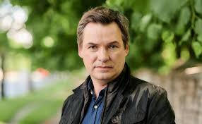

Саминин Андрей Николаевич
Андрей Саминин давно женат. Он живет в счастье и согласии с актрисой Лесей Самаевой. Молодые
люди вместе учились в театральном институте, но роман между ними вспыхнул только во время
совместных съемок в киноленте «Как закалялась сталь», где по сюжету герои Павка Корчагин и Тоня
Туманова испытывали друг к другу глубокие чувства.
Вскоре актеры стали жить вместе. Так как фильм создавался в честь 50-летия КНР, Саминина и
Самаеву часто приглашали в Китай на юбилейные показы. На один из них Леся приехала беременной,
чем порадовала китайскую сторону.

Как утверждали китайцы, благодаря их проекту Павка и Тоня по-настоящему сблизились. Не только
жители Поднебесной стали истинными поклонниками пары — в социальной сети «Инстаграм» их
соотечественники создали фан-страничку, посвященную актерам.
В 2002 году Саминин и Самаева стали счастливыми родителями, так как Леся родила дочь, которую на
семейном совете было решено назвать красивым древним именем Мария. Дочь актеров уже попробовала
силы на сценической площадке. Девочка снималась в рекламе, а также появилась в постановке
«Голубчики мои», где прочитала монолог. Но по словам артиста, продолжить династию она пока не
мечтает: в планах у Марии — поступление на факультет журналистики.
Личная жизнь супругов тесно связана с их профессиональной деятельностью не только из-за
совместных съемок в одном проекте. Андрей и Леся много времени проводят вместе, так как играют в
одном театре «На левом берегу Днепра» и неоднократно совместно снимались в кино, в том числе в
популярной военной картине «Хайтарма». Телезрителям жена Андрея Саминина также знакома по ролям
в семейной драме «Операция "ЧеГевара"» и комедии «Домашний арест».
Свободное время супруги проводят на даче, где у Андрея есть небольшая мастерская. Артист
признается, что для поддержания формы (при росте 182 см его вес не превышает 73 кг) вынужден
тренироваться, но сам он не считает себя поклонником спорта.